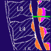
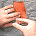
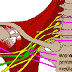
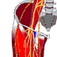
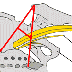
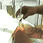

Andrew M. Elizaga, MD, Editor
Version 3.0 updated October 1998
One Year of the Illustrated Notes
(May 1998)
What is this site?
(May 1997)
Enoxaparin and Epidural Anesthesia
(May 1998)
Persistent Diplopia Following Dural Puncture
(October 1998)
LOCAL ANESTHETICS
Ropivacaine
(May 1997)
EPIDURAL ANESTHESIA

Vertebral Column Anatomy
(May 1997)
Anatomy of the Epidural Space
(May 1997)

Epidural Anesthesia: Technique
(May 1997)
BRACHIAL PLEXUS BLOCK

Brachial Plexus Anatomy
(May 1997)
Continuous Axillary Block
(May 1997)
Infraclavicular Brachial Plexus Block
(May 1997)
DISTAL UPPER EXTREMITY BLOCKS
The Ulnar Nerve: Anatomy
(May 1997)
Ulnar Nerve Block
(May 1997)
LOWER EXTREMITY BLOCKS

Femoral Nerve Block
(June 1997)

Sciatic Nerve Block
(May 1998)
SYMPATHETIC BLOCK

Stellate Ganglion Block
(May 1997)
TITLE PAGE
QuickTime PLUG-IN
RELATED SITES